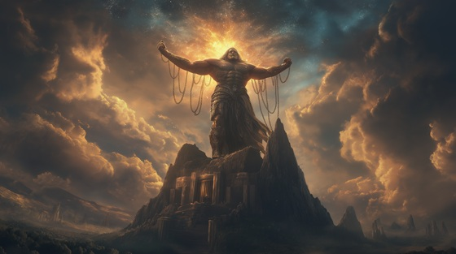

After the defeat of the Titans in the Titanomachy, the Titan Atlas, known for his immense strength and unwavering loyalty to Cronus, was given a punishment unlike any other. As retribution for his role in the war, Zeus condemned Atlas to hold up the sky on his shoulders for eternity.
In older myths, this burden was not the Earth, but the celestial heavens themselves, a symbolic act of submission beneath the order of Olympus. Atlas became a silent monument to rebellion crushed, his strength transformed into eternal imprisonment.
Though other Titans were cast into Tartarus, Atlas’s punishment was a living death—an unrelenting strain, invisible to mortals, but vital to the world’s balance. He endures, forgotten by most, yet upholding the very sky under which the Olympians rule.
Sealed in Stone
They chained my limbs, they broke my name
And gave me sky instead of flame
I fought for pride, I fought for kin
Now heavens crush my mortal skin
I do not speak, I do not scream
But still I strain beneath their dream
Sealed in stone, cursed to bear
A weight no god or beast could wear
I hold the stars, I hold the sky—
And never once have wondered why
They sing of justice, sing of peace
But I have never felt release
My war was lost, my soul was sold
To lift the crown their silence holds
The world moves on, but I remain
The scaffold for Olympian reign
Sealed in stone, cursed to bear
A weight no god or beast could wear
I hold the stars, I hold the sky—
And never once have wondered why
The sun forgets, the moon won’t weep
The earth rolls on while I can’t sleep
They passed my name into a tale
A ghost who holds the sky’s old veil
“I did not beg. I did not bow—
And still I bear the heavens now.”
Sealed in stone, cursed to bear
A weight no god or beast could wear
I hold the stars, I hold the sky—
So others walk, and others fly
So write your myths in ash and bone—
I live in silence, sealed in stone